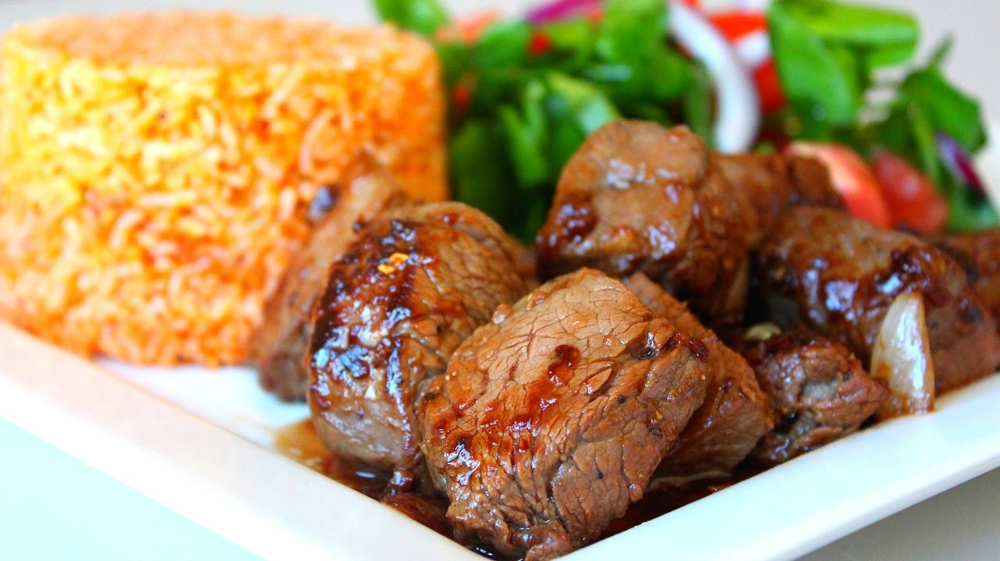

LOC LAC

Description
"Le loclac est un plat d'origine ambigue. Il est principalement constitue de boeuf saute accompagne de riz rouge supplemente d'un oeuf au plat."
Ingredients
- Riz
- Tomate
- Salade
- Boeuf
- Oeuf
Steps
- Cuire le riz
- Faire saute le boeuf
- Cuire l'oeuf
- Mettre tous dans l'assiette
- Servir